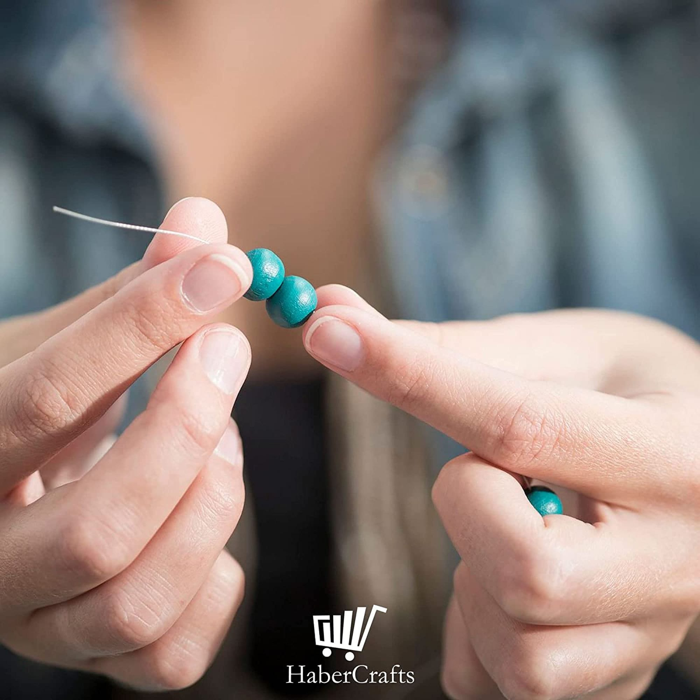
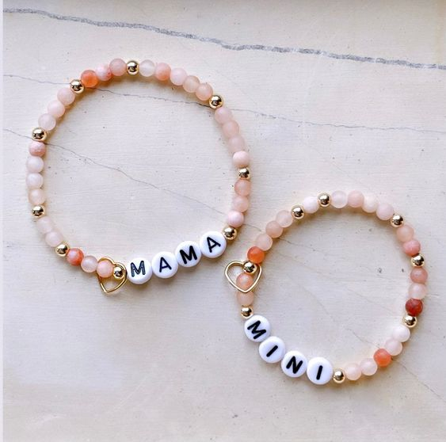

Guía paso a paso para diseñar pulseras con tu nombre
¿Te gustaría tener una pulsera especial con tu nombre? En este blog te guiaremos paso a paso para que puedas crear hermosas pulseras personalizadas utilizando abalorios de colores y de letras. Aprenderás a diseñar pulseras únicas que reflejen tu estilo y personalidad.
Imagina tener una pulsera que no solo lleve tu nombre, sino que también represente tus gustos y preferencias. Ya sea para ti o para regalar a alguien especial, estas pulseras personalizadas serán un accesorio significativo y encantador.
Materiales necesarios:
- Abalorios de letras
- Abalorios decorativos(colores, métalicos o de cualquier tipo que te guste)
- Hilo elástico o de nylon
- Tijeras
Paso 1: Preparar el Material
Corta un trozo de hilo elástico o hilo de nylon de aproximadamente 30 cm. Esta medida será suficiente para crear tu pulsera.

Paso 2: Ensartar los Abalorios
Empieza por ensartar los abalorios de letras en el hilo, formando de esta forma tu nombre. ¡No olvides colocar las letras en el orden correcto!
Ahora, ensarta los abalorios decorativos a cada lado de las letras para completar el diseño de la pulsera. Incluso puedes agregar abalorios con distintas formas, como corazones o estrellas, esto hará que tu pieza se vea más genial.
Paso 3: Hacer el nudo
Una vez que te hayas asegurado de que la longitud de la pulsera es adecuada para tu muñeca, ata un nudo firme con los extremos del hilo elástico o hilo de nylon.

Paso 4: Terminar la Pulsera
Te recomendamos hacer varios nudos sobre el nudo inicial para asegurar que la pulsera no se suelte. Por último, corta el exceso de hilo con las tijeras.
